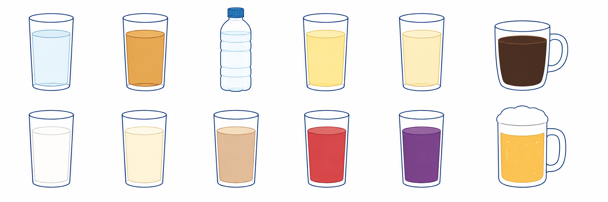

먼저 확인할 4가지
마지막 투약일
주 1회 주사는 마지막 주사 후 7일째에 검사하고 다음날(D+1) 주사를 재개합니다 — 주간 주기가 그대로 유지됩니다. 일정 조정이 어려우면 최소 3일 이상 비우기가 차선입니다 (OCULUS 3-day rule).
위장 증상
오심·구토·복부팽만·조기포만·역류감이 있으면 당일 꼭 알려주세요.
증량기/고용량
최근 용량을 올렸거나 부작용이 있는 시기는 위 배출 지연 가능성이 큽니다.
당뇨 처방
혈당약으로 쓰는 경우 임의 중단하지 말고 처방의와 먼저 상의합니다.
약 일정은 이렇게 맞춥니다
주 1회 주사 · 위고비 / 오젬픽 / 마운자로 / 젭바운드 / 트룰리시티
- 3일 룰: 3일+ 비우면 위 비움 92.7%, 1–2일 skip은 62.5%에 머무름 (OCULUS).
- 가장 깔끔한 예약: 마지막 주사 후 7일째 검사 + 다음날 재개 (예: 수요일 주사 → 다음 주 수요일 검사, 목요일 주사).
- 증량기·고용량·증상 있으면 1회 연기 + 전날 액체식 함께 권고.
매일 제제 · 리벨서스 / 빅토자 / 삭센다
- 반감기가 짧아 대개 검사 당일 아침 복용/주사만 조정하면 충분합니다.
- 주 1회 3일 룰은 매일 제제에 그대로 적용되지 않지만, 증상·증량기·고용량이면 전날 액체식이 안전.
- 당뇨 치료는 임의 중단 피하고, 약 이름·마지막 투약일·용량을 알려주세요.
일정 조정이 어렵다면 — 전날 맑은 유동식이 결정적입니다 (OCULUS)
OCULUS 2×2 결과 — 식이가 결정적 (★)
일반식
맑은 유동식
약
유지
유지
25% 위험
★ OK
약
중단
중단
중단 한계
가장 안전
약을 유지해도 전날 액체식만 지키면 위 잔류 거의 사라짐 — 약 중단과 거의 동등 (OCULUS).
전날 24시간 음료 가이드
✓ 허용
✗ 피함

물보리차이온사과꿀물커피
우유요거트미숫가루붉은보라알코올
검사 당일 · 다음 증상은 꼭 알려주세요
- 오심·구토, 명치 답답함, 심한 속쓰림
- 복부 팽만, 잦은 트림, 역류감
- 조기 포만감: 조금만 먹어도 오래 배부름
- 누우면 올라오는 느낌: 신물·음식 역류
위 내용물이 남아 있을 가능성이 있으면 검사 연기, 마취 방식 조정, 위 초음파 평가 등을 의료진이 판단합니다.
검사 종류별 추가 안내
- 표준 금식 옵션: 주 1회는 7일째 검사(부득이하면 3일+) 간격을 지키고 증상 없으면 고형식 8h·맑은 물 2h 가능. 대장내시경 장정결제 끝까지 복용.
- 진정 위·대장 / EUS / ERCP: 흡인 위험 — 약 일정·증상 확인 필수.
- 비진정 복부 초음파: 위 음식·가스가 췌장·담낭 시야를 가려 표준 금식 필요.
- 진정 검사: 보호자 동반, 당일 운전 금지, 30분 전 도착 · 상담 ☏ 031-893-4560.
근거: OCULUS RCT (JAMA Intern Med 2026 May) · 2024/2025 다학회 GLP-1 peri-procedural guidance · AGA CPU · GIE 2025.